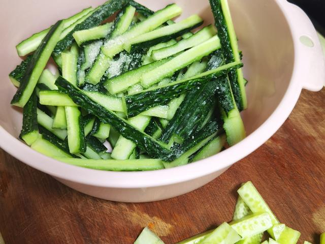
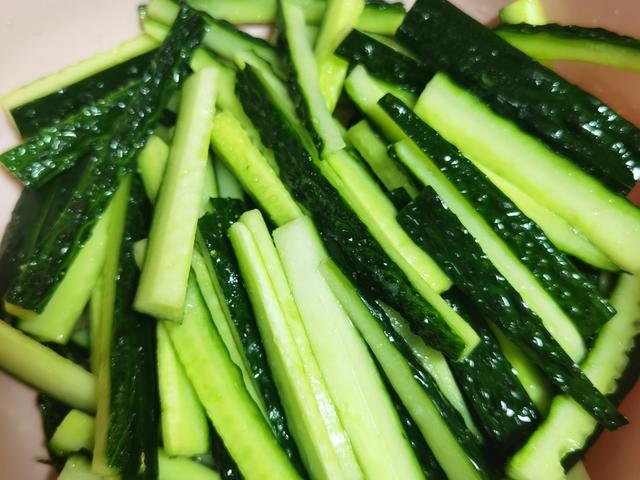
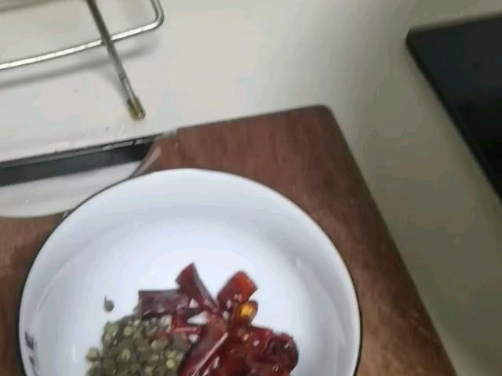
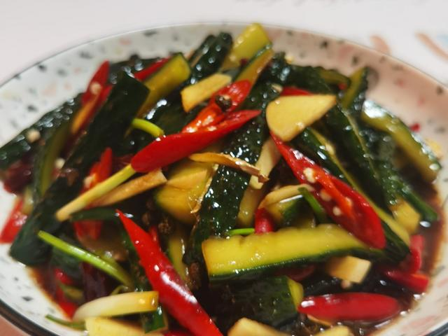

01 · 本课目标
为什么用它收尾？
可乐鸡翅甜、麻婆豆腐咸辣，这时候来一盘脆生生的黄瓜，整顿饭才平衡。
本课记住一句话：黄瓜先拍后切，加盐腌 5 分钟倒掉水，再调汁拌匀——顺序不能反。
02 · 用料
买这些就够了
黄瓜挑直、硬、颜色翠绿的；表皮带小刺的通常更新鲜。
香油几滴 糖提鲜平衡酸，香油收尾。
还需要：一把较宽的刀、一个拌菜盆、一双筷子。拍黄瓜时刀要横放、用掌根发力，别用刀刃砍。
03 · 跟着做
四步，十分钟上桌
真正动手只要几分钟，剩下的时间都在“等腌入味”，正好去热菜。
第一段 · 腌黄瓜（约 6 分钟）
-
STEP 拍黄瓜 · 约 2 分钟
洗净、拍裂、切段
黄瓜洗净，刀横放在黄瓜上，用掌根往下拍一下让它裂开，再斜切成约 4 厘米的段。
看到这样算对：黄瓜裂成几瓣但没碎成渣，切面凹凸不平——这样才容易挂汁。

-
STEP 盐腌 · 约 5 分钟
撒盐拌匀，静置 5 分钟
黄瓜放进拌菜盆，撒盐拌匀，静置 5 分钟。时间到后，把盆里腌出的水倒掉。
看到这样算对：盆底有明显水分析出；黄瓜表面微皱但捏着还是硬的。倒掉水后尝一小块，如果太咸就用凉白开冲一下再沥干。

第二段 · 调味（约 4 分钟）
-
STEP 调汁 · 约 1 分钟
小碗调汁，尝到“刚好再咸一点”
小碗放蒜末、生抽、香醋、糖、香油（和辣椒油），搅到糖化开。尝一口：入口酸咸，回甜带蒜香。
看到这样算对：单尝汁会觉得略浓略抢，拌上黄瓜后正好；不够味就补一点生抽。

-
STEP 拌匀 · 约 2 分钟
倒汁拌匀，静置或冷藏 5 分钟
把汁倒进黄瓜盆里，从底部往上翻拌均匀。拌好后放 5 分钟，或盖保鲜膜冷藏到上菜前。
看到这样算对：每块黄瓜都挂着薄汁，盆底没有积汤；夹起一块，脆得能听到声音。

04 · 翻车急救站
拍黄瓜翻车？最多是味道和出水
这两件事都有简单的补救办法。
拌完盘底一滩水
为什么：腌的时间不够就拌汁，或黄瓜被拍得太碎。
现在怎么办：把黄瓜夹到新盘里，底部的水倒掉；汁不够可以补一小勺。
下次避免：盐腌满 5 分钟并倒掉水，再拌汁。
味道太咸或太淡
为什么：腌黄瓜的盐没冲掉，或料汁比例不对。
现在怎么办：太咸用凉白开冲一下再沥干，加一点糖和醋；太淡直接补一点生抽。
下次避免：腌完先尝一块，再决定汁里放不放盐。
黄瓜软了不脆
为什么：黄瓜放太久、腌太久，或一开始就买了蔫黄瓜。
现在怎么办：这盘当“软黄瓜”吃也别倒；下次别腌超过 8 分钟。
下次避免：挑硬黄瓜，拍好后尽快腌、尽快拌、尽快吃。
蒜味太重
为什么：蒜末刚切好就拌。
现在怎么办：放 10 分钟再吃，蒜味会自然柔和；或者少放一半。
下次避免：把蒜末先泡在料汁里 5 分钟再拌。
05 · 学会标准
怎么算“学会了”？
这道菜通过，你的“请客餐桌”就真的配齐了。
-
1
黄瓜脆、盘底干 端上桌半小时后依然脆，没有泡在汤里。
-
2
味道清爽解腻 吃完鸡翅和豆腐，夹一口黄瓜正好清口。
-
3
会安排时间 提前拌好放冰箱，热菜快好时再端出。
-
4
凉拌汁随手能调 换到别的菜上，也能按 1:1 的比例调出底味。